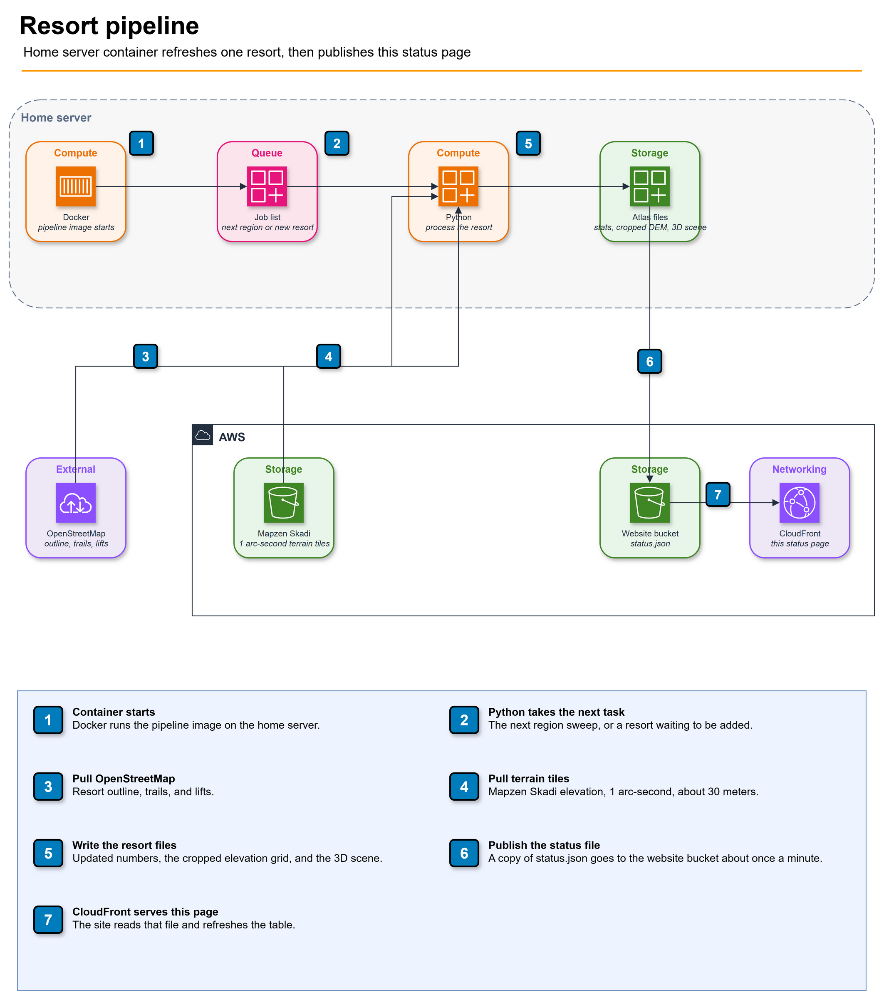

Pipeline status
Global Ski Atlas keeps a page for ski areas around the world. The boundaries, trails, and lifts come from OpenStreetMap, where people draw the mountain themselves. This page is the log of an Asus PB60 mini PC that keeps those pages in step with the map. The page is a work record, not a ranking or a place to buy a ticket.
Right now the whole process runs on that PC at home. It has a Core i5-9500T at 2.20 GHz and 8 GB of DDR4. It came from Facebook Marketplace for $60, and it can't run the new Windows. It does two jobs. One walks the world one region at a time (a state, a province, or a country) and rebuilds every resort the atlas already has there, then moves on. There are 373 regions, so a full lap takes days. The line under this note tells you which region just finished and which one is next. The other job runs once a day. It looks for a named ski area on the map that we have never added, and puts it on a waiting list. “Queued to add” means it is on that list and nothing has been built yet. “Updated” means we already had the resort and just rebuilt it from the current map.
A job reads that resort’s current map data and refreshes the numbers. It also downloads a fresh elevation grid for the resort, the DEM, from Mapzen Skadi terrain tiles. The resolution is 1 arc-second, about 30 meters. Tiles come in one-degree squares, and the job keeps only the piece that covers the resort. The 3D scene is built on that terrain. If the scene has no downhill run long enough to publish, or we cannot tell which region the area belongs to, the row is marked failed and the sweep keeps going. When an update succeeds, the resort’s wiki page is the place to read the result. The name in the table links there when the page exists. The counts under this note are ski resorts in that recent list, not regions. A copy of this summary is published to the website about once a minute.

Loading pipeline status…
These numbers are ski resorts in the recent list, not regions. The line above is how far the world sweep has walked.
Running
Recent
| Time | Status | Resort | Message |
|---|
Refreshes every 60 seconds.